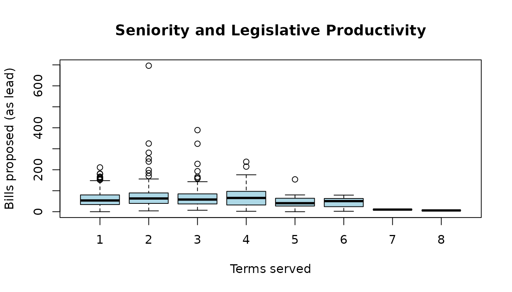
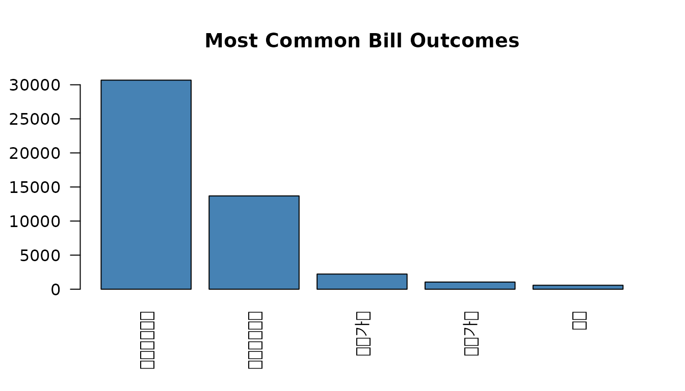
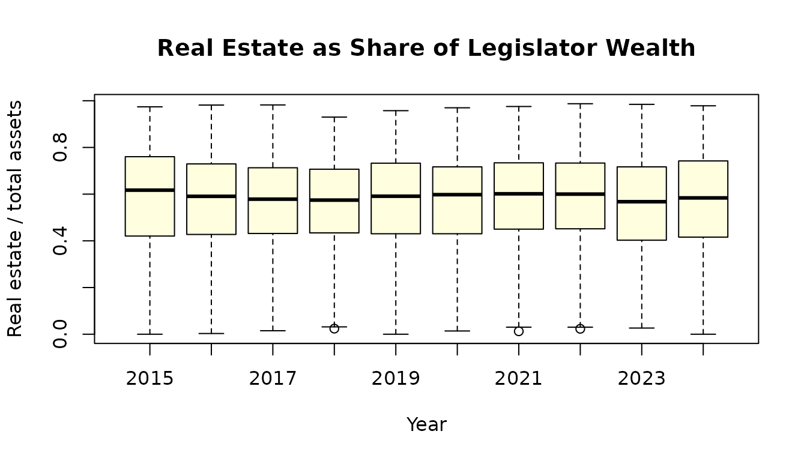
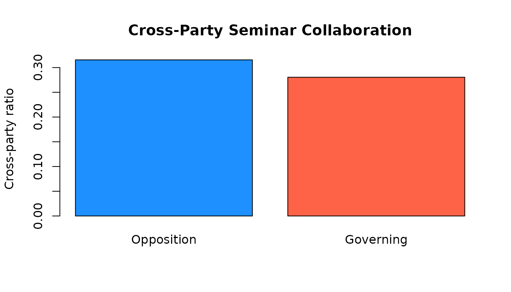
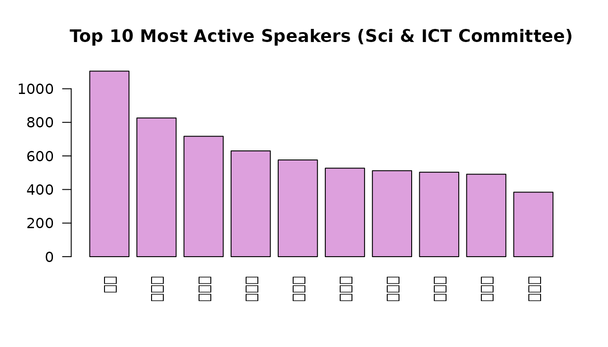

Overview
assemblykor provides seven built-in datasets from the
Korean National Assembly for teaching quantitative methods in political
science:
-
legislators: 947 MP records (20th-22nd assemblies) -
bills: 60,925 legislative bills -
wealth: 2,928 legislator-year asset declarations -
seminars: 5,962 legislator-year seminar activity records -
speeches: 15,843 committee speech records (22nd, Science & ICT) -
votes: 8,050 plenary vote tallies (20th-22nd) -
roll_calls: 383,739 member-level roll call votes (22nd)
library(assemblykor)
#>
#> ┌───────────────────────────────────────────────────────────────┐
#> │ assemblykor 0.1.2 │
#> │ Korean National Assembly Data for Political Science Education │
#> └───────────────────────────────────────────────────────────────┘
#>
#> 7 built-in datasets:
#> legislators 947 recs MPs (20-22nd)
#> bills 60,925 recs Bills proposed
#> wealth 2,928 recs Asset declarations
#> seminars 5,962 recs Policy seminars
#> speeches 15,843 recs Committee speeches (22nd, Sci & ICT)
#> votes 8,050 recs Plenary vote tallies
#> roll_calls 383,739 recs Member-level votes (22nd)
#>
#> Downloadable:
#> get_bill_texts() Bill propose-reason texts
#> get_proposers() Co-sponsorship records
#>
#> Tutorials:
#> list_tutorials() See all 9 tutorials
#> run_tutorial(1) Launch in browser (interactive)
#> open_tutorial(1) Copy Rmd to working directory
#>
#> Korean font for ggplot2: set_ko_font()
#>
#> https://CRAN.R-project.org/package=assemblykor1. Exploring legislator data
data(legislators)
str(legislators)
#> 'data.frame': 947 obs. of 15 variables:
#> $ member_id : chr "XQ98168F" "60490713" "IH436704" "8I61593E" ...
#> $ assembly : int 20 20 20 20 20 20 20 20 20 20 ...
#> $ name : chr "강길부" "강병원" "강석진" "강석호" ...
#> $ name_hanja : chr "姜吉夫" "姜炳遠" "姜錫振" "姜碩鎬" ...
#> $ name_eng : chr "KANG GHILBOO" "KANG BYUNGWON" "KANG SEOGJIN" "KANG SEOKHO" ...
#> $ party : chr "무소속" "더불어민주당" "자유한국당" "자유한국당" ...
#> $ party_elected: chr "무소속" "더불어민주당" "새누리당" "새누리당" ...
#> $ district : chr "울산 울주군" "서울 은평구을" "경남 산청군함양군거창군합천군" "경북 영양군영덕군봉화군울진군" ...
#> $ district_type: chr "constituency" "constituency" "constituency" "constituency" ...
#> $ committees : chr "산업통상자원중소벤처기업위원회, 4차 산업혁명 특별위원회, 예산결산특별위원회, 교육문화체육관광위원회" "" "농림축산식품해양수산위원회, 국회운영위원회, 보건복지위원회, 예산결산특별위원회" "농림축산식품해양수산위원회, 외교통일위원회, 정보위원회, 정치개혁 특별위원회, 행정안전위원회, 안전행정위원회" ...
#> $ gender : chr "M" "M" "M" "M" ...
#> $ birth_date : Date, format: "1942-06-05" "1971-07-09" ...
#> $ seniority : int 4 2 1 3 4 1 3 2 2 1 ...
#> $ n_bills : int 312 1078 694 583 1131 393 1478 932 1284 1054 ...
#> $ n_bills_lead : int 21 94 53 43 89 74 75 55 78 64 ...Gender composition by assembly
gender_tab <- table(legislators$assembly, legislators$gender)
gender_tab
#>
#> F M
#> 20 53 267
#> 21 64 258
#> 22 64 241
prop.table(gender_tab, margin = 1)
#>
#> F M
#> 20 0.1656250 0.8343750
#> 21 0.1987578 0.8012422
#> 22 0.2098361 0.7901639Legislative productivity by seniority
boxplot(n_bills_lead ~ seniority, data = legislators,
xlab = "Terms served", ylab = "Bills proposed (as lead)",
main = "Seniority and Legislative Productivity",
col = "lightblue")
Senior legislators produce more bills, but with high variance.
2. Bill outcomes
data(bills)
# Top 5 outcomes
outcome_counts <- sort(table(bills$result), decreasing = TRUE)
barplot(outcome_counts[1:5], las = 2, col = "steelblue",
main = "Most Common Bill Outcomes")
Most bills expire at the end of the assembly term (임기만료폐기). Only a small fraction pass in their original form (원안가결).
Bills per month
bills$month <- format(bills$propose_date, "%Y-%m")
monthly <- aggregate(bill_id ~ month, data = bills, FUN = length)
names(monthly) <- c("month", "count")
monthly <- monthly[order(monthly$month), ]
plot(seq_len(nrow(monthly)), monthly$count, type = "l",
xlab = "Month (index)", ylab = "Bills proposed",
main = "Monthly Bill Proposals (20th-22nd Assembly)")3. Wealth panel
The wealth dataset is a legislator-year panel ideal for
practicing fixed-effects regression.
data(wealth)
# Distribution of net worth
hist(wealth$net_worth / 1e6, breaks = 50, col = "coral",
main = "Legislator Net Worth Distribution",
xlab = "Net Worth (billion KRW)")Real estate concentration
wealth$re_share <- ifelse(wealth$total_assets > 0,
wealth$real_estate / wealth$total_assets, NA)
boxplot(re_share ~ year, data = wealth,
xlab = "Year", ylab = "Real estate / total assets",
main = "Real Estate as Share of Legislator Wealth",
col = "lightyellow")
Korean legislators hold a large share of their wealth in real estate, reflecting broader patterns in Korean household wealth.
4. Policy seminars and cross-party cooperation
data(seminars)
# Governing vs opposition party
gov_means <- tapply(seminars$cross_party_ratio,
seminars$is_governing, mean, na.rm = TRUE)
barplot(gov_means, names.arg = c("Opposition", "Governing"),
ylab = "Cross-party ratio", col = c("dodgerblue", "tomato"),
main = "Cross-Party Seminar Collaboration")
Governing-party legislators tend to have lower cross-party collaboration in policy seminars, a pattern consistent with the “closing ranks” hypothesis.
5. Joining datasets
All datasets share the member_id and/or
assembly columns:
library(dplyr)
# Merge legislators with wealth
leg_wealth <- legislators %>%
inner_join(wealth, by = "member_id", relationship = "many-to-many")
# Productivity vs wealth
leg_wealth %>%
group_by(district_type) %>%
summarise(
n = n(),
median_net_worth = median(net_worth / 1e6, na.rm = TRUE),
median_bills = median(n_bills_lead, na.rm = TRUE)
)
#> # A tibble: 2 × 4
#> district_type n median_net_worth median_bills
#> <chr> <int> <dbl> <dbl>
#> 1 constituency 4489 1.48 62
#> 2 proportional 466 1.23 656. Plenary votes
data(votes)
# Yes-vote share distribution
votes$yes_rate <- votes$yes / votes$voted
hist(votes$yes_rate, breaks = 40, col = "lightgreen",
main = "Distribution of Yes-Vote Share",
xlab = "Proportion yes")Most bills pass with near-unanimous support. The left tail reveals contested legislation where party discipline breaks down.
7. Roll call analysis
data(roll_calls)
library(dplyr)
# Party discipline: how often do members vote with their party majority?
party_votes <- roll_calls %>%
group_by(bill_id, party) %>%
mutate(party_majority = names(which.max(table(vote)))) %>%
ungroup() %>%
mutate(with_party = vote == party_majority)
party_votes %>%
group_by(party) %>%
summarise(
n_members = n_distinct(member_id),
discipline = mean(with_party, na.rm = TRUE)
) %>%
filter(n_members >= 5) %>%
arrange(desc(discipline))
#> # A tibble: 4 × 3
#> party n_members discipline
#> <chr> <int> <dbl>
#> 1 조국혁신당 13 0.888
#> 2 더불어민주당 169 0.856
#> 3 국민의힘 107 0.762
#> 4 무소속 6 0.7538. Speech patterns
data(speeches)
# Who speaks most in committee?
leg_speeches <- speeches[speeches$role == "legislator", ]
speaker_counts <- sort(table(leg_speeches$speaker_name), decreasing = TRUE)
barplot(speaker_counts[1:10], las = 2, col = "plum",
main = "Top 10 Most Active Speakers (Sci & ICT Committee)")
Next steps
For text analysis, download the bill propose-reason texts:
texts <- get_bill_texts()For network analysis, download the full co-sponsorship records:
proposers <- get_proposers()See vignette("codebook") for the full data dictionary,
or ?get_bill_texts and ?get_proposers for
download function details.